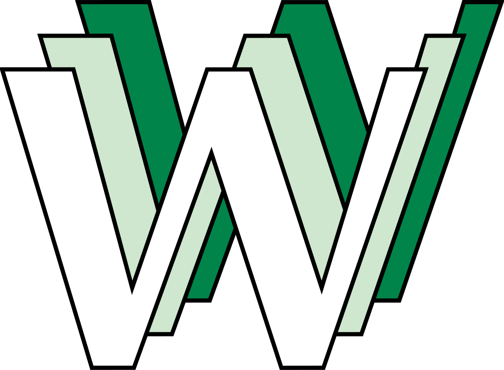
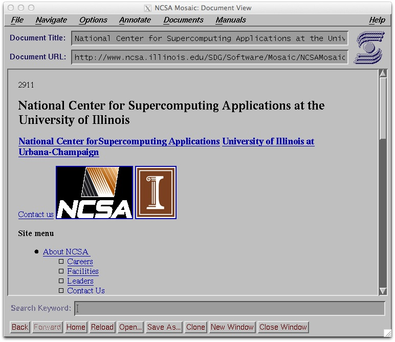
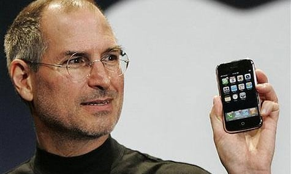

ARPANET

A ARPANET foi criada pela ARPA (Agência de Projetos de Pesquisa Avançada dos EUA),sendo a primeira rede de computadores a usar a tecnologia de comutação de pacotes. O primeiro nó foi estabelecido entre a UCLA e o Stanford Research Institute.
Envio do primeiro e-mail
Criado por Ray Tomlinson em 1971, o primeiro e-mail da história usou o símbolo “@” para separar o nome do usuário do computador. A mensagem? Algo simples, só pra testar.
TCP/IP

Vint Cerf e Bob Kahn criaram o protocolo TCP/IP, que permitiu a comunicação entre redes diferentes, tornando possível a internet global. Esse protocolo tornou-se a base da internet moderna.
World Wide Web
Tim Berners-Lee, enquanto trabalhava no CERN, criou a World Wide Web (WWW), desenvolvendo o HTML, o HTTP e os URLs. Com isso, tornou possível o acesso e a navegação pela internet de forma simples e acessível ao público em geral..
Mosaic - o primeiro navegador
O primeiro navegador gráfico popular (Mosaic) tornou a web mais amigável, levando à explosão de usuários e pavimentando o caminho para o Netscape e Internet Explorer.
Comercialização da Internet

A NSFNET (rede acadêmica) foi desativada, abrindo espaço para provedores comerciais (como AOL), tornando a internet acessível ao público geral.
Revolucionou a forma de buscar informações. O Google criou um sistema de ranking por relevância (PageRank) e se tornou o cérebro externo da humanidade.
Explosão das redes sociais

Facebook (2004), YouTube (2005) e Twitter (2006) redefiniram comunicação, entretenimento e cultura digital, iniciando a era da Web 2.0.
Popularização dos Smartphones
O iPhone (2007) e a App Store (2008) tornaram a internet móvel indispensável, levando a redes como Instagram (2010) e WhatsApp (2009) dominarem a comunicação global.
Ascensão da IA generativa
Ferramentas como ChatGPT, DALL·E e outras marcaram uma nova fase: máquinas capazes de criar, conversar e até raciocinar em linguagem natural.